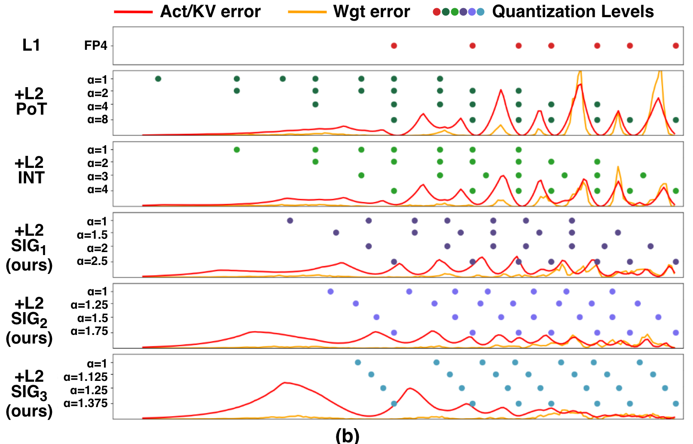
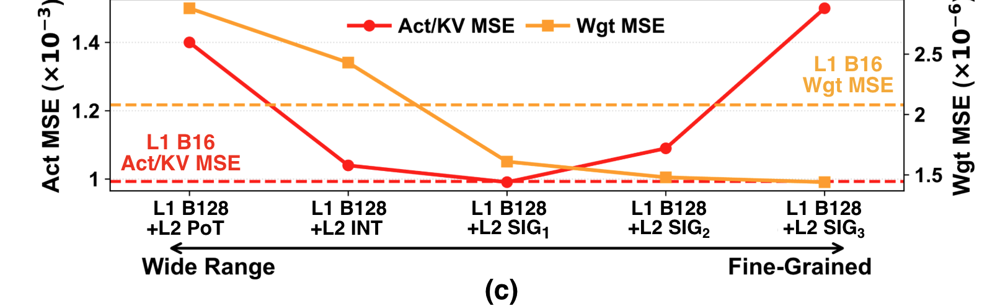
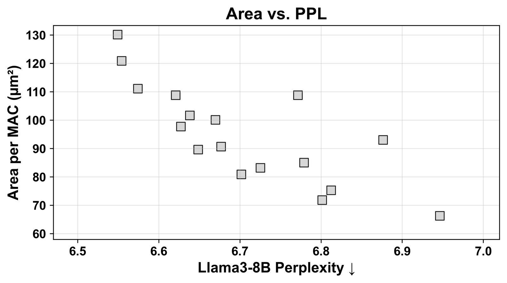

A close reading of HBQ: Hierarchical Scaling Block Quantization with Hardware-Efficiency-Aware Design for Accurate LLM Inference by Chun-Ting Chen, Dongmin Han, Hangyeol Mun, Jake Hyun, Arnab Raha, Amit Agarwal, Mark Anders, Mohamed Abdelfattah and Jae-sun Seo, Cornell and Intel, accepted to MICRO 2026.
MXFP4 is 4.25 bits per weight. NVFP4 is 4.5. Neither of them is 4 bits, and the gap is not a rounding detail: it is scale-factor metadata, and it is 6% of your weight traffic between one format and the other.
Everybody knows the scale factors are there. Almost nobody puts them on the same axis as the element and asks the obvious question. You have a metadata budget. At what granularity should you spend it?
HBQ answers that question and lands somewhere counterintuitive. It reaches a finer scaling granularity than NVFP4 while spending less metadata, and the resulting datapath is smaller in silicon. Eight elements per finest scale for 0.31 bits, against NVFP4's sixteen elements for 0.5.
That is not a free lunch, and I will get to what it costs. But the reason it works is worth understanding whether or not you ever run this format, because it is a statement about what a scale factor is for.
What a scale factor is actually doing
Quantize a tensor to 4 bits and you have to map a real-valued distribution onto sixteen levels. A scale factor picks the mapping. Block quantization applies one scale per contiguous run of elements instead of one per tensor, because the local spread inside a small run is narrower than the global one.
Here is the part that gets collapsed. A scale factor does two separable jobs.
Dynamic range. It slides the representable window so the block's largest magnitude lands near the top of the format. This needs exponent bits, and it is a property of a fairly wide neighbourhood. A whole channel, or a 128-element run, mostly shares one answer.
Resolution. It sets how finely that window is subdivided where the values actually sit. This is local. Values a few positions apart can want noticeably different spacing.
Single-level block quantization forces you to buy both at the same granularity, and that is why the block-size argument feels stuck. Shrink the block and you pay for a full 8-bit scale to get resolution you needed and dynamic range you did not. Grow the block and you lose the resolution along with the cost.
The paper's design space exploration puts numbers on the stuck part. Going from to cuts area per MAC by 1.6x, because the dequantization multiply and, much more importantly, the floating-point accumulation get amortized over eight times as many elements. And accuracy falls, asymmetrically: weight MSE rises from 2.08e-06 to 2.89e-06 with the extra error sitting in high-magnitude regions, while activation and KV error nearly triples, from 9.93e-04 to 2.93e-03, with the extra error sitting in the small-magnitude elements.
That asymmetry is why weights and activations end up with different treatment later.
The budget view
Here is the reframing I want to argue for. Decompose every format's effective bit width into three parts: element bits, first-level scale bits per element, second-level scale bits per element. It is arithmetic, and it closes exactly against the numbers the paper publishes.
| format | element | L1 scale | L2 scale | total | paper |
|---|---|---|---|---|---|
| MXFP4 | 4 | 8/32 = 0.25 | none | 4.25 | 4.25 |
| NVFP4 | 4 | 8/16 = 0.5 | none | 4.5 | 4.5 |
| VSQ | 4 | per channel, negligible | 8/16 = 0.5 | 4.5 | 4.5 |
| MicroExponent | 3 | 8/16 = 0.5 | 1/2 = 0.5 | 4.0 | 4.0 |
| HBQ-E, weights | 4 | 8/128 = 0.0625 | 2/32 = 0.0625 | 4.125 | 4.13 |
| HBQ-A, weights | 4 | 8/128 = 0.0625 | 2/8 = 0.25 | 4.3125 | 4.31 |
Once the metadata is on its own axis, the design space stops being a list of format names and becomes one trade.
Read the bottom two rows against the two above them. HBQ-A gets a scale factor every 8 elements for 0.3125 bits of metadata. NVFP4 gets one every 16 for 0.5. Twice the granularity for 62.5% of the cost. HBQ-E matches MXFP4's 32-element granularity for half the metadata.
The trick is that the two levels are not the same purchase. The L1 scale is an 8-bit floating-point number and it drags a floating-point accumulator behind it, so it is expensive and you want it amortized over as many elements as possible. The L2 scale is 2 bits with a deliberately narrow range, which means everything before L1 dequantization stays in fixed-point. Dynamic range is bought wholesale at . Resolution is bought retail at .
MicroExponent is the cautionary row. Block 16 with micro-block 2 is the finest granularity in the table, and it costs a full bit of scale overhead. At a 4-bit nominal budget that leaves about INT3 of actual element precision, and Llama3-8B perplexity lands at 9.45 against NVFP4's 6.88. Granularity you paid for by shrinking the element is not granularity.
Why the shape of the second scale matters
The second-level multiplier is 2 bits, so there are four of them. The obvious choices are powers of two, 1, 2, 4 and 8, or small integers, 1, 2, 3 and 4. HBQ uses neither. Significand scaling is defined as
so the parameter trades span for granularity.
| scheme | multipliers | span |
|---|---|---|
| PoT | 1, 2, 4, 8 | 8.0x |
| INT | 1, 2, 3, 4 | 4.0x |
| SIG1 | 1, 1.5, 2, 2.5 | 2.5x |
| SIG2 | 1, 1.25, 1.5, 1.75 | 1.75x |
| SIG3 | 1, 1.125, 1.25, 1.375 | 1.375x |
The authors give two reasons the power-of-two version underperforms, and both follow from the range-versus-resolution split. The levels overlap across different , because FP4's own exponent field already moves in powers of two, so a power-of-two multiplier lands the block back on levels it could already reach. And the scheme spreads its four levels over a dynamic range that plus an 8-bit L1 scale has already handled.
You can see both of those directly in their Figure 8(b), which plots the levels each scheme actually reaches.

Follow the PoT row. Four multipliers, and the dots cluster back onto the same positions the FP4 row above already occupies. Now follow SIG3. The dots fill in between the existing levels, in exactly the region where the error curve underneath is tallest.
The next panel is the one that decides the design.

The two curves cross. Activations and KV cache bottom out at SIG1 and get sharply worse by SIG3, because they genuinely have wide local spread and need the span. Weights keep improving all the way to SIG3, because their distribution is concentrated and what they need is resolution, not room.
So HBQ uses SIG1 for activations, and for weights it evaluates SIG2 and SIG3 per block offline and stores a 1-bit selector. No calibration set is involved on the weight path, which is a genuinely nice property: the choice is made from the weights themselves.
The exchange rate
Here is the calculation I think is the most useful thing to take away, and it is not in the paper. The paper's own progressive ablation walks from NVFP4 to HBQ-E one change at a time, on Llama3-8B.
| step | perplexity | area per MAC | system energy |
|---|---|---|---|
| NVFP4, W4A4, B16 | 6.88 | 93.0 | 4.99 J |
| + 5-bit activations | 6.64 | 101.7 | 5.29 J |
| + block size 128 | 6.95 | 66.3 | 3.36 J |
| + L2 SIG scaling | 6.68 | 72.4 | 3.72 J |
Both of the last two rows are trades between the same two currencies. Price them.
- Through the block size. Going from 16 to 128 saves 35.4 square micrometres per MAC and costs 0.31 perplexity. That is 114 square micrometres per perplexity point.
- Through the second level. Adding SIG at spends 6.1 square micrometres and recovers 0.27 perplexity. That is 23 square micrometres per perplexity point.
Accuracy bought through the second level costs about a fifth of what the same accuracy costs through the first. The energy column agrees independently: 6.2 joules per perplexity point against 1.3, a ratio of 4.7.
The paper asserts that micro-block size is the better tuning knob and explains why, which is that shrinking L1 de-amortizes the floating-point accumulator. The ratio puts a number on how much better, and the number is large enough to be a design rule rather than a preference.
What it costs, stated plainly
The headline is that HBQ-A hits weight-only accuracy at W4A5 with less silicon than NVFP4, and that is true as written. It is also worth reading twice, because the two formats do not spend their bits in the same place.
HBQ-A's weight budget is 4.31 bits, below NVFP4's 4.5. Its activation budget is 5.31, above NVFP4's 4.5. The comparison is fair on the axis the paper cares about, because the baselines were aligned on weight bit width to match external memory cost and weights dominate that traffic. But if you repeat the claim, repeat the activation number with it.
Two more things worth holding onto.
The hardware numbers are 28nm ASIC synthesis, not GPUs. Every competing format was reimplemented on the paper's own PE baseline and place-and-routed in the same technology. That is the right way to run a comparison and the wrong thing to quote as a fact about anyone's shipping silicon. "NVFP4 costs 93 square micrometres per MAC" means "an NVFP4 datapath built this way, here", not anything about what is inside a Blackwell.
The accuracy story is thinner than the hardware story. Wikitext-2 perplexity plus Winogrande and PIQA zero-shot is a narrow lens for a quantization paper, and the paper's own reasoning tables show the spread widening when you look harder: HBQ-E is 0.4% behind HBQ-A on zero-shot averages and about 3% behind on reasoning with the KV cache quantized. If you are choosing a configuration, that gap is the one that will bite, not the zero-shot one.
Where it lands

Two arrows, two different moves. Increasing block size walks you right and down: cheaper, worse. Adding the second-level scale walks you left for a small step up: most of the accuracy back, a fraction of the area. The Pareto front moves because those two moves are not symmetric, which is the whole content of the exchange-rate calculation above.
For scale, HBQ-A's 87 square micrometres per MAC against the weight-only baseline's 200 reproduces the paper's headline 2.3x area efficiency exactly. And at iso-silicon, 93 over 72 means an HBQ-E datapath fits 29% more MACs than an NVFP4 one in the same area, before any of the KV cache and partial-sum work that gets them to the 1.5x to 3x end-to-end speedup they report.
One more thing, for people sizing buffers
HBQ's weight path stores a 1-bit selector per L1 block to record whether that block chose SIG2 or SIG3. That is a further 1/128 = 0.0078 bits per element. Add it and HBQ-A comes to 4.320 rather than 4.3125, and HBQ-E to 4.133 rather than 4.125, so the published 4.31 and 4.13 look like they exclude it.
It changes no conclusion in the paper. It is 2.5% of HBQ-A's metadata. But if you are sizing a weight buffer against a hard limit, count it, because it is real bits that have to live somewhere.
What I would take from this
Three things, in decreasing order of how much I would bet on them.
Say the effective bit width, not the format name. "We run 4-bit" is said about MXFP4 at 4.25, NVFP4 at 4.5, and weight-only schemes at 4.13 for weights and 16 for activations. Those are three different memory budgets and the conversation goes wrong immediately.
Granularity has a price and the price depends on where you buy it. If a format gives you a fine scale by shrinking the whole block, you are paying for dynamic range you already had. A coarse block with a cheap local refinement is a strictly better shape for the same metadata, and the five-to-one exchange rate above is roughly how much better.
Watch the weight side. In the paper's ablation of second-level schemes, varying the weight scheme moves Llama3-8B perplexity by 0.21 and varying the activation scheme moves it by 0.06. The second level earns most of its silicon on the weights, even though the activations are where the block-size error grew fastest. Those two facts sit oddly together, and I do not think the paper fully resolves them: the activation error, being concentrated in small-magnitude elements, is error the downstream accumulation is largely insensitive to. That is a guess and I would want to test it before believing it.
Paper: arXiv:2609.00450, MICRO 2026, CC BY 4.0. The figures reproduced here are Figures 8 and 11 from that paper, attributed in each caption. The bar chart, the budget decomposition and the exchange-rate calculation are mine.